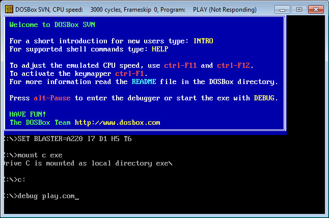
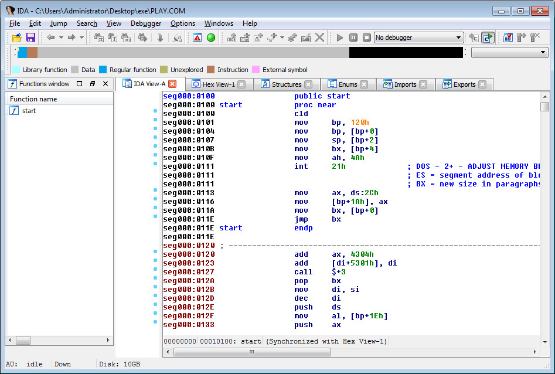
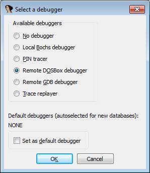
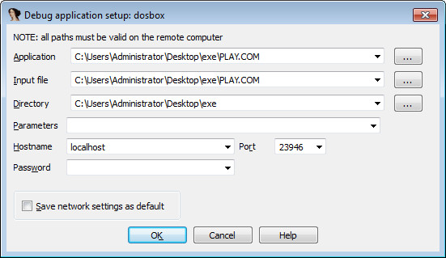
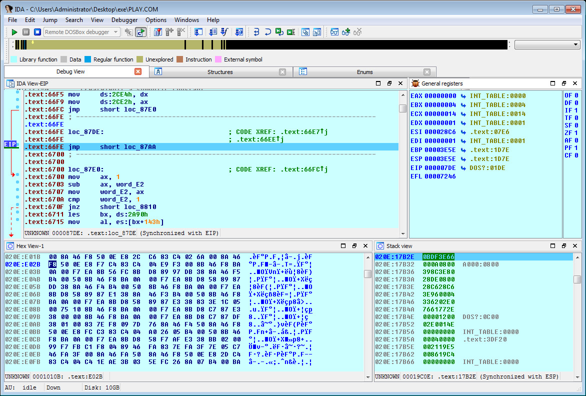

Steward
分享是一種喜悅、更是一種幸福
逆向工程 - IDA Pro - v6.4 - Debug DOSBox
參考資訊：
https://github.com/lab313ru/idados_dosbox
步驟如下：
1. 解開idados_v1_0.7z並且放到IDA Pro根目錄
2. 執行dosbox.exe(WinXP有掛載問題)並且進入debug模式(如下是一個簡單測試範例)：
mount c exe c: debug play.com

P.S. 如遇到沒有回應，使用Alt+Tab切換
3. 接著開啟IDA Pro並載入DOSBox執行的檔案(如上例的play.com)

4. Debugger => Switch debugger... => Remote DOSBox debugger

5. Debugger => Process options... => Hostname:localhost

6. 按下F9開始Debug
